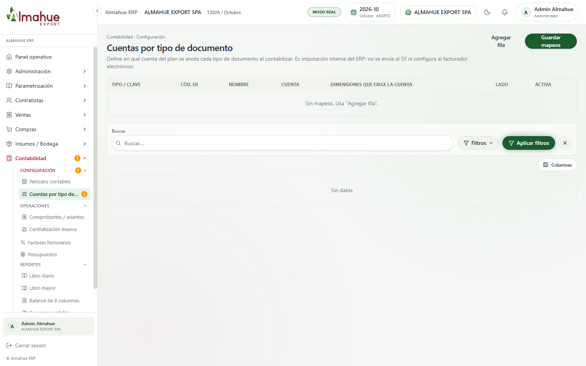
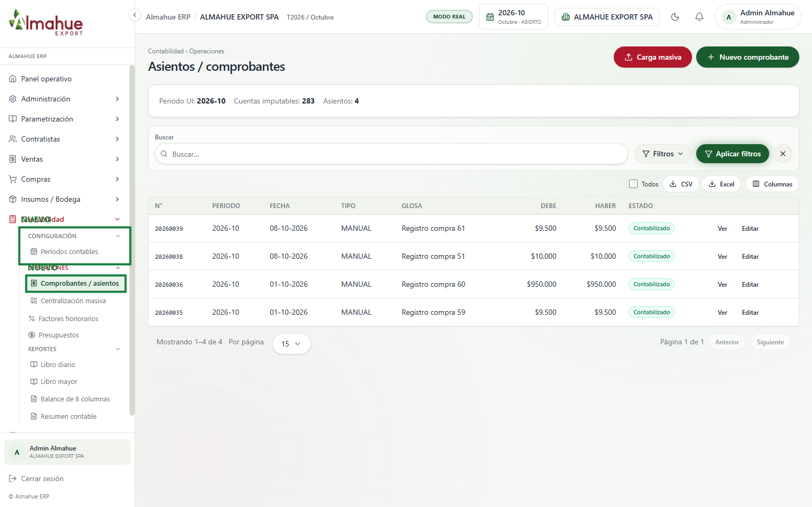

izquierda / derecha: antes y después. + y - : zoom. Esc cierra
ALMAHUE EXPORT SPA, modo real, periodo 2026-10. El recuadro verde y la etiqueta NUEVO están solo en la captura, no en el sistema. Un clic abre la imagen. La rueda o las teclas + y - hacen zoom. Izquierda y derecha cambian entre el antes y el después. Esc cierra. No se pulsó Guardar, Sincronizar ni Contabilizar.


Se quitó el menú y la pantalla de mapeo por tipo de documento. Configuración queda con Períodos contables. La URL /contabilidad/config-sii abre Comprobantes / asientos. El asiento usa el plan (código hoja) y las cuentas del documento. No se guardó nada.